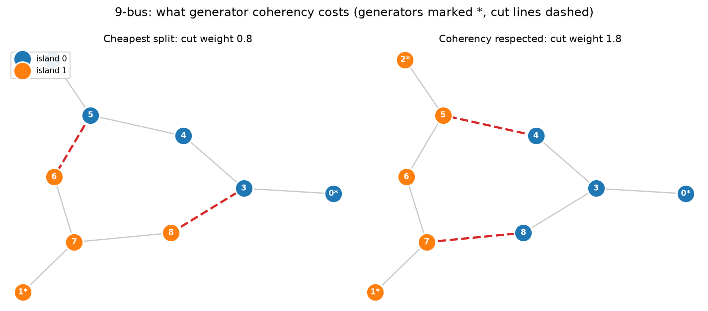
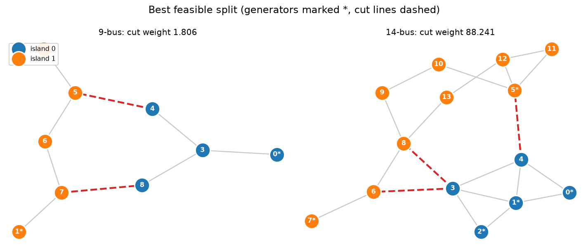

Model controlled islanding as a QUBO¶
-
Track
Power systems
-
Downloads
A power grid is a machine that has to stay synchronized. Every generator on it spins at the same electrical frequency, held there by the power flowing through the transmission lines. When a large disturbance hits — a line trips, a generator drops out — that balance is disturbed, and if the disturbance is severe enough the machines begin to pull apart from one another. Protective relays see the resulting swings and trip more lines, which makes the swings worse. That runaway is a cascading failure, and it is how a local fault becomes a regional blackout.
Controlled islanding is the last-resort defense: instead of fighting the cascade, the operator deliberately splits the network into separate islands, each of which contains enough generation to supply its own load and can run independently until the system is repaired. The cascade stops at the island boundaries.
The engineering question is where to cut, and it has to be answered in seconds.
Why this is a combinatorial optimization problem¶
Strip away the physics and a network is a weighted graph: buses (substations) are the nodes, transmission lines are the edges, and each edge carries a weight equal to the power flowing on it. Splitting the grid means assigning every bus to an island, and the lines whose two endpoints land in different islands are the ones that get opened.
That gives the shape of the problem:
- The cost is the total weight of the cut lines. Opening a line interrupts the power flowing on it, and that power has to be made up somewhere — by shedding load or by ramping a generator. So the objective is to cut as little power flow as possible.
- The decision is discrete. A bus is either in island 0 or island 1. There is no useful notion of a bus being 40% in one island.
- The choices interact. Whether a line is cut depends on two buses at once, so the cost is not a sum of independent per-bus decisions. This is what makes the problem quadratic rather than linear, and what makes it hard.
Assigning \(n\) buses to \(k\) islands gives \(k^n\) possible assignments. There is no known way to search that space efficiently in general — minimum cut with balance requirements is NP-hard — and the assignment has to be found fast enough to act on. That combination, an exponential discrete search under a hard time budget, is exactly the class of problem quantum optimization is aimed at.
Constraints are what make it interesting¶
A pure minimum cut is not a usable answer, because a split that is cheap to make can still be one the grid cannot survive. Four requirements matter:
- Generator coherency. After a disturbance, generators do not swing randomly: they separate into groups whose members accelerate together and decelerate together. Two generators from different groups left inside one island will pull against each other, lose synchronism, and trip the island they were supposed to save. Coherent generators must therefore stay together, and incoherent ones must be separated. This is the requirement that makes controlled islanding different from graph partitioning, and it comes from the dynamics rather than the topology.
- Each island must be able to run. It needs generation, it needs load to absorb that generation, and it needs to be more than a stub.
- Each island must be connected. A set of buses with no path between them is not an island; it is two islands, one of which may have no generator at all.
The identification of coherent groups is a separate problem with its own literature [2]. The search for a splitting strategy that respects them is the problem modeled here, and [3] is a good entry point to the classical approaches. This tutorial takes the coherent groups as given data and asks for the split.
Where this tutorial stops¶
By the end you will have a QUBO — a quadratic function of binary variables whose minimum is the split — checked against exhaustive enumeration on two IEEE test systems, plus a clear picture of what the model does and does not capture. Running it on a quantum circuit is the subject of Split a power grid into islands with QAOA.
The formulation developed here follows REGRID-QAOA [1], which introduces this coherency-informed model of controlled islanding together with the structured post-processing the companion tutorial uses.
The mechanics of QUBOs in general, and of turning one into a FatQat program, are covered in Solve a QUBO with QAOA.
The networks¶
Two systems are carried in full here, the WSCC 9-bus and the IEEE 14-bus. Three larger ones appear in the qubit accounting of Split a power grid into islands with QAOA, which is where the width of the model starts to matter. Bus labels are zero-based, so bus 0 is the system's bus 1. Line weights are the steady-state power flows of the reference case, which is what makes the cut weight the power interrupted by the split.
The coherency groups are the interesting part of the data. On the 14-bus
system, generators 0, 1, and 2 swing together and generators 5 and 7 swing
together, so any acceptable split must put {0, 1, 2} on one side and
{5, 7} on the other. That single requirement is what stops the answer from
being the cheapest cut in the graph.
import matplotlib.pyplot as plt
import numpy as np
from scipy.optimize import minimize
import fatqat as fq
import fatqat.operations as ops
SYSTEMS = {
"9-bus": {
"edges": [
(0, 3, 0.8855058426108287),
(2, 5, 1.0506270719315443),
(3, 4, 0.3795071371756076),
(4, 5, 0.7349783693597357),
(5, 6, 0.29891469957856975),
(6, 7, 0.9382048153285490),
(7, 1, 2.0147319144099027),
(7, 8, 1.0706524421112620),
(8, 3, 0.5028157475281494),
],
"generators": [0, 1, 2],
"loads": [4, 5, 7, 8],
"coherency": [[1, 2], [0]],
"islands": 2,
},
"14-bus": {
"edges": [
(0, 1, 154.73), (0, 4, 74.129), (1, 2, 72.076), (1, 3, 55.293),
(1, 4, 41.064), (2, 3, 23.472), (3, 4, 61.415), (3, 6, 28.074),
(3, 8, 16.080), (4, 5, 44.087), (5, 10, 7.3256), (5, 11, 7.7502),
(5, 12, 17.642), (6, 7, 5.7112e-11), (6, 8, 28.074), (8, 9, 5.2211),
(8, 13, 9.3683), (9, 10, 3.7916), (11, 12, 1.6111), (12, 13, 5.6168),
],
"generators": [0, 1, 2, 5, 7],
"loads": [1, 2, 3, 4, 5, 8, 9, 10, 11, 12, 13],
"coherency": [[0, 1, 2], [5, 7]],
"islands": 2,
},
}
for name, spec in SYSTEMS.items():
spec["buses"] = sorted({b for i, j, _ in spec["edges"] for b in (i, j)})
spec["lines"] = [(i, j) for i, j, _ in spec["edges"]]
spec["weight"] = {(i, j): w for i, j, w in spec["edges"]}
print(
f"{name}: {len(spec['buses'])} buses, {len(spec['lines'])} lines, "
f"{len(spec['generators'])} generators, {len(spec['loads'])} loads, "
f"coherency groups {spec['coherency']}, "
f"total flow {sum(w for *_, w in spec['edges']):.3f}"
)
def line_weight(spec, i, j):
"""Return the flow on a line, accepting either endpoint order."""
return spec["weight"].get((i, j), spec["weight"].get((j, i), 1.0))
print()
for name, spec in SYSTEMS.items():
buses, islands = len(spec["buses"]), spec["islands"]
print(
f"{name}: {islands}**{buses} = {islands ** buses:,} possible assignments"
)
print("\nand for the larger systems this tutorial does not carry in full:")
for buses, islands, label in [(24, 3, "24-bus"), (30, 2, "30-bus"), (39, 3, "39-bus")]:
print(f"{label}: {islands}**{buses} = {islands ** buses:.3e} assignments")
Runtime result
9-bus: 9 buses, 9 lines, 3 generators, 4 loads, coherency groups [[1, 2], [0]], total flow 7.876
14-bus: 14 buses, 20 lines, 5 generators, 11 loads, coherency groups [[0, 1, 2], [5, 7]], total flow 656.821
9-bus: 2**9 = 512 possible assignments
14-bus: 2**14 = 16,384 possible assignments
and for the larger systems this tutorial does not carry in full:
24-bus: 3**24 = 2.824e+11 assignments
30-bus: 2**30 = 1.074e+09 assignments
39-bus: 3**39 = 4.053e+18 assignments
The 9-bus system has 512 assignments, which a laptop enumerates instantly. The 39-bus system has more than \(4 \times 10^{18}\). Real transmission networks have thousands of buses. Enumeration stops being an option almost immediately, which is why the classical literature reaches for ordered binary decision diagrams, spectral clustering, and submodular relaxations — and why the problem is a candidate for quantum optimization.
Two encodings for the same decision¶
The textbook encoding gives every bus one binary variable per island: \(y_{i,g} = 1\) when bus \(i\) joins island \(g\). It handles any number of islands, but most of its bitstrings are nonsense — a bus can be assigned to two islands, or to none — so it needs a one-hot penalty \(\sum_i (\sum_g y_{i,g} - 1)^2\) to forbid them, and it costs \(n_\text{buses} \times k\) qubits.
When there are exactly two islands, the one-hot rule says \(y_{i,1} = 1 - y_{i,0}\): the second variable carries no information. Keeping one variable per bus, whose value names the island directly, halves the qubit count and deletes the penalty, because no bitstring can violate a rule the encoding cannot express. That is the single largest lever available on a near-term device, and it costs nothing. Encodings that push the same idea further, and the reductions that go with them, are the subject of [5] and [6].
Both encodings are built below. The rest of the requirements are the same in each: they only differ in how "bus \(i\) is in island \(g\)" is written down.
def build_qubo(
spec, encoding="binary", penalty=None, balance_weight=None, use_coherency=True
):
"""Return (constant, linear, quadratic, variables) for one islanding model.
Set use_coherency=False to build the pure minimum-cut model, which is
useful for showing what the coherency requirement actually buys.
"""
buses, lines, k = spec["buses"], spec["lines"], spec["islands"]
# Line weights are physical flows, so they differ by orders of magnitude
# between systems. Every penalty is stated as a multiple of the heaviest
# line, which bounds what any single reassignment can save.
scale = max(line_weight(spec, i, j) for i, j in lines)
if penalty is None:
penalty = 2.0 * scale
if balance_weight is None:
# Balance only has to forbid a degenerate one-bus island, so it sits
# far below the hard constraints; heavier, and it overrides the
# objective it is meant to guard.
balance_weight = 0.1 * scale
if encoding == "binary" and k != 2:
raise ValueError("the binary encoding needs exactly two islands")
if encoding == "one_hot":
variables = [f"y[{b},{g}]" for b in buses for g in range(k)]
else:
variables = [f"y[{b}]" for b in buses]
index = {name: position for position, name in enumerate(variables)}
constant, linear = 0.0, np.zeros(len(variables))
quadratic: dict[tuple[int, int], float] = {}
def add_quadratic(a, b, value):
i, j = index[a], index[b]
if i == j:
linear[i] += value # x * x == x for binary x
return
key = (i, j) if i < j else (j, i)
quadratic[key] = quadratic.get(key, 0.0) + value
def add_square(terms, offset, weight):
"""Add weight * (sum_k c_k v_k + offset)**2, expanded with x*x = x."""
nonlocal constant
constant += weight * offset**2
for name, c in terms:
linear[index[name]] += weight * (c * c + 2 * offset * c)
for a in range(len(terms)):
for b in range(a + 1, len(terms)):
add_quadratic(terms[a][0], terms[b][0], 2 * weight * terms[a][1] * terms[b][1])
def member(bus, island):
"""Terms and offset whose sum is 1 exactly when bus is in island."""
if encoding == "one_hot":
return [(f"y[{bus},{island}]", 1.0)], 0.0
# Under the binary encoding, island 1 is the variable and island 0 is
# its complement.
return ([(f"y[{bus}]", 1.0)], 0.0) if island == 1 else ([(f"y[{bus}]", -1.0)], 1.0)
# Objective: the flow on every cut line.
for i, j in lines:
w = line_weight(spec, i, j)
if encoding == "one_hot":
constant += w
for g in range(k):
add_quadratic(f"y[{i},{g}]", f"y[{j},{g}]", -w)
else:
linear[index[f"y[{i}]"]] += w
linear[index[f"y[{j}]"]] += w
add_quadratic(f"y[{i}]", f"y[{j}]", -2 * w)
# Exactly one island per bus. Unnecessary, and skipped, under "binary".
if encoding == "one_hot":
for bus in buses:
add_square([(f"y[{bus},{g}]", 1.0) for g in range(k)], -1.0, penalty)
# Coherency: groups stay whole, and different groups stay apart.
groups = spec["coherency"] if use_coherency else []
for group in groups:
for a in range(len(group)):
for b in range(a + 1, len(group)):
if encoding == "one_hot":
for g in range(k):
add_square(
[(f"y[{group[a]},{g}]", 1.0), (f"y[{group[b]},{g}]", -1.0)],
0.0, penalty,
)
else:
add_square(
[(f"y[{group[a]}]", 1.0), (f"y[{group[b]}]", -1.0)], 0.0, penalty
)
for a in range(len(groups)):
for b in range(a + 1, len(groups)):
for i in groups[a]:
for j in groups[b]:
if encoding == "one_hot":
for g in range(k):
add_quadratic(f"y[{i},{g}]", f"y[{j},{g}]", penalty)
else:
# 1 - (y_i + y_j - 2 y_i y_j) is 1 when they agree.
constant += penalty
linear[index[f"y[{i}]"]] -= penalty
linear[index[f"y[{j}]"]] -= penalty
add_quadratic(f"y[{i}]", f"y[{j}]", 2 * penalty)
# Balance: islands of equal size. An equality, so it needs no slack qubits,
# and it rules out the degenerate split that isolates a single bus.
target = len(buses) / k
for g in range(k):
terms, offset = [], 0.0
for bus in buses:
bus_terms, bus_offset = member(bus, g)
terms += bus_terms
offset += bus_offset
add_square(terms, offset - target, balance_weight)
return constant, linear, quadratic, variables
for encoding in ("one_hot", "binary"):
for name, spec in SYSTEMS.items():
constant, linear, quadratic, variables = build_qubo(spec, encoding)
print(f"{name:8} {encoding:8} {len(variables):3d} qubits, {len(quadratic):4d} pair terms")
Runtime result
9-bus one_hot 18 qubits, 81 pair terms
14-bus one_hot 28 qubits, 196 pair terms
9-bus binary 9 qubits, 36 pair terms
14-bus binary 14 qubits, 91 pair terms
What the model actually says¶
With 14 or fewer variables the whole space fits in memory, so the model can be checked exhaustively before any quantum work. That check is worth doing, and on this problem it turns up something important.
The energy of a bitstring is only half the story. Decoding it into an island assignment and running the operating checks — including connectivity, which is deliberately not in the QUBO — is what says whether the split is usable.
def spectrum_of(constant, linear, quadratic, n):
"""Return every assignment's energy, indexed the way FatQat indexes states."""
codes = np.arange(1 << n)
columns = [((codes >> (n - 1 - p)) & 1).astype(bool) for p in range(n)]
energies = np.full(1 << n, constant)
for position, value in enumerate(linear):
if value:
energies[columns[position]] += value
for (i, j), value in quadratic.items():
energies[columns[i] & columns[j]] += value
return energies
def to_bits(index, n):
return np.array([(index >> (n - 1 - p)) & 1 for p in range(n)], dtype=np.int8)
def connected(members, lines):
"""Return whether the subgraph induced on a bus set is connected."""
if len(members) <= 1:
return True
inside = set(members)
adjacency = {bus: [] for bus in inside}
for i, j in lines:
if i in inside and j in inside:
adjacency[i].append(j)
adjacency[j].append(i)
start = next(iter(inside))
seen, stack = {start}, [start]
while stack:
for neighbor in adjacency[stack.pop()]:
if neighbor not in seen:
seen.add(neighbor)
stack.append(neighbor)
return seen == inside
def decode(spec, bits, encoding="binary"):
"""Return the island assignment a bitstring encodes, plus its checks."""
buses, lines, k = spec["buses"], spec["lines"], spec["islands"]
placement, unassigned = {}, []
if encoding == "binary":
for position, bus in enumerate(buses):
placement[bus] = int(bits[position])
else:
for position, bus in enumerate(buses):
chosen = [g for g in range(k) if bits[position * k + g] == 1]
if len(chosen) != 1:
unassigned.append(bus)
if chosen:
placement[bus] = chosen[0]
islands = {g: sorted(b for b, i in placement.items() if i == g) for g in range(k)}
cut = [(i, j) for i, j in lines if placement.get(i, -1) != placement.get(j, -2)]
groups = spec["coherency"]
coherent = all(len({placement.get(b, -1) for b in g}) == 1 for g in groups) and all(
not ({placement.get(b, -1) for b in groups[a]} & {placement.get(b, -2) for b in groups[c]})
for a in range(len(groups))
for c in range(a + 1, len(groups))
)
checks = {
"assigned": not unassigned,
"coherency": coherent,
"connected": all(connected(m, lines) for m in islands.values() if m),
"generators": all(any(b in m for b in spec["generators"]) for m in islands.values()),
"loads": all(any(b in m for b in spec["loads"]) for m in islands.values()),
"min buses": all(len(m) >= 2 for m in islands.values()),
}
return {
"islands": islands,
"cut_lines": cut,
"cut_weight": sum(line_weight(spec, i, j) for i, j in cut),
"checks": checks,
"feasible": all(checks.values()),
}
references = {}
for name, spec in SYSTEMS.items():
constant, linear, quadratic, variables = build_qubo(spec, "binary")
energies = spectrum_of(constant, linear, quadratic, len(variables))
order = np.argsort(energies, kind="stable")
ground = decode(spec, to_bits(int(order[0]), len(variables)))
best_feasible = next(
(
(int(index), decode(spec, to_bits(int(index), len(variables))))
for index in order
if decode(spec, to_bits(int(index), len(variables)))["feasible"]
),
None,
)
references[name] = {
"spec": spec, "energies": energies, "variables": variables,
"qubo": (constant, linear, quadratic),
"best_index": best_feasible[0], "best": best_feasible[1],
"best_energy": float(energies[best_feasible[0]]),
}
failed = [check for check, ok in ground["checks"].items() if not ok]
print(f"\n{name}")
print(f" QUBO ground state energy {energies[order[0]]:9.4f} "
f"{'feasible' if not failed else 'FAILS: ' + ', '.join(failed)}")
print(f" best feasible energy {references[name]['best_energy']:9.4f} "
f"cut weight {best_feasible[1]['cut_weight']:.4f}")
print(f" islands {best_feasible[1]['islands']}")
Runtime result
9-bus
QUBO ground state energy 1.9064 feasible
best feasible energy 1.9064 cut weight 1.8056
islands {0: [0, 3, 4, 8], 1: [1, 2, 5, 6, 7]}
14-bus
QUBO ground state energy 58.6764 FAILS: connected
best feasible energy 212.0250 cut weight 88.2410
islands {0: [0, 1, 2, 3, 4], 1: [5, 6, 7, 8, 9, 10, 11, 12, 13]}
On the 9-bus system the QUBO's ground state is the answer. On the 14-bus system it is not: the cheapest assignment the QUBO knows about leaves an island in two disconnected pieces, and the best usable split costs noticeably more.
This is not a modeling mistake — it is a deliberate trade. Writing connectivity as a quadratic penalty needs auxiliary variables and a great many terms, which buys width and depth on a device that has neither to spare. Checking it after decoding costs nothing. The consequence is that minimizing the QUBO is not the same as solving the problem, and the gap has to be closed somewhere else. That is the job of the postprocessing in Split a power grid into islands with QAOA.
def spring_layout(nodes, edges, seed=3, steps=400):
"""Lay out a graph with a force model: edges pull, every pair pushes."""
rng = np.random.default_rng(seed)
index = {node: position for position, node in enumerate(nodes)}
position = rng.normal(0.0, 1.0, (len(nodes), 2))
link = np.array([[index[i], index[j]] for i, j in edges])
k = 1.0 / np.sqrt(len(nodes))
for step in range(steps):
delta = position[:, None, :] - position[None, :, :]
distance = np.linalg.norm(delta, axis=-1) + 1e-9
push = (delta / distance[..., None]) * (k**2 / distance)[..., None]
push[np.arange(len(nodes)), np.arange(len(nodes))] = 0.0
net = push.sum(axis=1)
along = position[link[:, 0]] - position[link[:, 1]]
length = np.linalg.norm(along, axis=-1, keepdims=True) + 1e-9
pull = (along / length) * (length**2 / k)
np.add.at(net, link[:, 0], -pull)
np.add.at(net, link[:, 1], pull)
limit = 0.1 * (1 - step / steps)
norm = np.linalg.norm(net, axis=-1, keepdims=True) + 1e-9
position += net / norm * np.minimum(norm, limit)
position -= position.mean(axis=0)
position /= np.abs(position).max()
return {node: position[index[node]] for node in nodes}
def draw_split(axis, spec, solution, title, legend=False):
"""Draw a network with its islands colored and its cut lines dashed."""
layout = spring_layout(spec["buses"], spec["lines"])
cut = {frozenset(line) for line in solution["cut_lines"]}
for i, j in spec["lines"]:
style = (
dict(color="#d62728", linestyle="--", linewidth=2.2)
if frozenset((i, j)) in cut
else dict(color="#c8c8c8", linewidth=1.2)
)
axis.plot(*zip(layout[i], layout[j]), zorder=1, **style)
palette = ["#1f77b4", "#ff7f0e", "#2ca02c"]
for island, members in solution["islands"].items():
if not members:
continue
points = np.array([layout[bus] for bus in members])
axis.scatter(
points[:, 0], points[:, 1], s=330, c=palette[island],
edgecolors="white", linewidths=1.5, zorder=2, label=f"island {island}",
)
for bus in spec["buses"]:
marker = "*" if bus in spec["generators"] else ""
axis.annotate(
f"{bus}{marker}", layout[bus], ha="center", va="center",
color="white", fontsize=8, fontweight="bold", zorder=3,
)
axis.set_axis_off()
axis.set_title(title, fontsize=10)
if legend:
axis.legend(loc="upper left", fontsize=8, framealpha=0.9)
SHOWCASE = "9-bus"
showcase_spec = SYSTEMS[SHOWCASE]
# The same network modeled without the coherency requirement: pure minimum cut
# with a balance preference, which is the graph-theoretic problem alone.
plain = build_qubo(showcase_spec, use_coherency=False)
plain_energies = spectrum_of(plain[0], plain[1], plain[2], len(plain[3]))
cheapest = decode(showcase_spec, to_bits(int(np.argmin(plain_energies)), len(plain[3])))
coherent = references[SHOWCASE]["best"]
figure, axes = plt.subplots(1, 2, figsize=(10.0, 4.4))
draw_split(
axes[0], showcase_spec, cheapest,
f"Cheapest split: cut weight {cheapest['cut_weight']:.1f}", legend=True,
)
draw_split(
axes[1], showcase_spec, coherent,
f"Coherency respected: cut weight {coherent['cut_weight']:.1f}",
)
figure.suptitle(
f"{SHOWCASE}: what generator coherency costs "
"(generators marked *, cut lines dashed)"
)
figure.tight_layout()
groups = showcase_spec["coherency"]
placement = {
bus: island for island, members in cheapest["islands"].items() for bus in members
}
broken = [check for check, ok in cheapest["checks"].items() if not ok]
print(f"cheapest split cut weight {cheapest['cut_weight']:8.3f} "
f"violates: {', '.join(broken) if broken else 'nothing'}")
for group in groups:
print(f" coherent group {group} sits in islands "
f"{sorted({placement[bus] for bus in group})}")
print(f"coherency respected cut weight {coherent['cut_weight']:8.3f} "
f"({coherent['cut_weight'] / cheapest['cut_weight']:.1f}x the cheapest)")
# The same comparison on the other system, where a different requirement binds.
other = "14-bus" if SHOWCASE == "9-bus" else "9-bus"
other_spec = SYSTEMS[other]
other_plain = build_qubo(other_spec, use_coherency=False)
other_cheapest = decode(
other_spec,
to_bits(
int(np.argmin(spectrum_of(*other_plain[:3], len(other_plain[3])))),
len(other_plain[3]),
),
)
other_broken = [check for check, ok in other_cheapest["checks"].items() if not ok]
print(f"\n{other}: cheapest split cut weight {other_cheapest['cut_weight']:.3f}, "
f"violates: {', '.join(other_broken) if other_broken else 'nothing'}")
print(f"{other}: best feasible cut weight {references[other]['best']['cut_weight']:.3f}")
Runtime result
cheapest split cut weight 0.802 violates: coherency
coherent group [1, 2] sits in islands [0, 1]
coherent group [0] sits in islands [0]
coherency respected cut weight 1.806 (2.3x the cheapest)
14-bus: cheapest split cut weight 58.676, violates: connected
14-bus: best feasible cut weight 88.241

On the 9-bus system the cheapest split tears a coherent group in half, which is precisely the failure the exercise exists to prevent: those two machines would swing apart inside one island and trip it. Keeping them together costs more than twice as much interrupted power. That trade — a worse cut in exchange for a split the grid survives — is why this is a constrained optimization problem and not a minimum-cut computation.
The 14-bus system is bound by a different requirement. There the cheapest split happens to separate the coherent groups correctly, and what makes it unusable is that one of its islands falls into two disconnected pieces. Both systems land on the same lesson from opposite directions: the cheap answer is not the usable one.
Here are the answers the full model gives on each.
figure, axes = plt.subplots(1, 2, figsize=(10.0, 4.2))
for position, (axis, name) in enumerate(zip(axes, SYSTEMS)):
reference = references[name]
draw_split(
axis, reference["spec"], reference["best"],
f"{name}: cut weight {reference['best']['cut_weight']:.3f}",
legend=(position == 0),
)
figure.suptitle("Best feasible split (generators marked *, cut lines dashed)")
figure.tight_layout()
Runtime result

What the model is, and what it leaves out¶
The model is now complete enough to hand to an optimizer. It is a quadratic function of binary variables in which:
- the objective is the interrupted power flow;
- generator coherency, island balance, and — optionally — generation, load, and minimum size per island are quadratic penalties that vanish exactly when the requirement holds;
- connectivity is not represented at all, and is checked after a candidate is decoded.
That last point is a deliberate trade, and on the 14-bus system it has teeth: the QUBO's own minimum is a split whose islands are disconnected, so minimizing the model is not the same as solving the problem. Closing that gap is a postprocessing step rather than a modeling one, and it is where the next tutorial begins.
Split a power grid into islands with QAOA takes this model, maps it onto a circuit, runs it on FatQat's simulator, and repairs what comes back.
References¶
- Y. Jiang, Y. Zhang, Z. Liang, Q. Guan, Y. Li, and G. K. Venayagamoorthy, "REGRID-QAOA: A Resource-Efficient Hybrid QAOA Framework for Physics-Constrained Power System Islanding", arXiv:2606.15083 (2026). The coherency-informed formulation this tutorial develops.
- H. You, V. Vittal, and X. Wang, "Slow coherency-based islanding", IEEE Transactions on Power Systems 19(1), 483–491 (2004). How coherent generator groups are identified; this tutorial takes them as given data.
- K. Sun, D.-Z. Zheng, and Q. Lu, "Splitting strategies for islanding operation of large-scale power systems using OBDD-based methods", IEEE Transactions on Power Systems 18(2), 912–923 (2003). A classical approach to the same search, evaluated on the same IEEE test systems.
- A. Lucas, "Ising formulations of many NP problems", Frontiers in Physics 2, 5 (2014). The standard catalogue of constraint-to-penalty mappings, and the reference for writing a requirement as a quadratic penalty.
- Y. Jiang, Z. Liang, Q. Guan, Y. Li, and G. K. Venayagamoorthy, "PACE-QAOA: Physics-Constrained Quantum Optimization for Qubit-Efficient Power System Islanding", arXiv:2608.02789 (2026). Compact encodings and Lagrangian constraint handling for qubit-efficient islanding.
- Y. Jiang, Z. Liang, Q. Guan, Y. Li, and G. K. Venayagamoorthy, "SPLIT-Q: A Scalable Sequential Quantum Computing Framework for Coherent Controlled Islanding", arXiv:2608.12711 (2026). Sequential regional QUBOs that keep circuit width independent of network size.